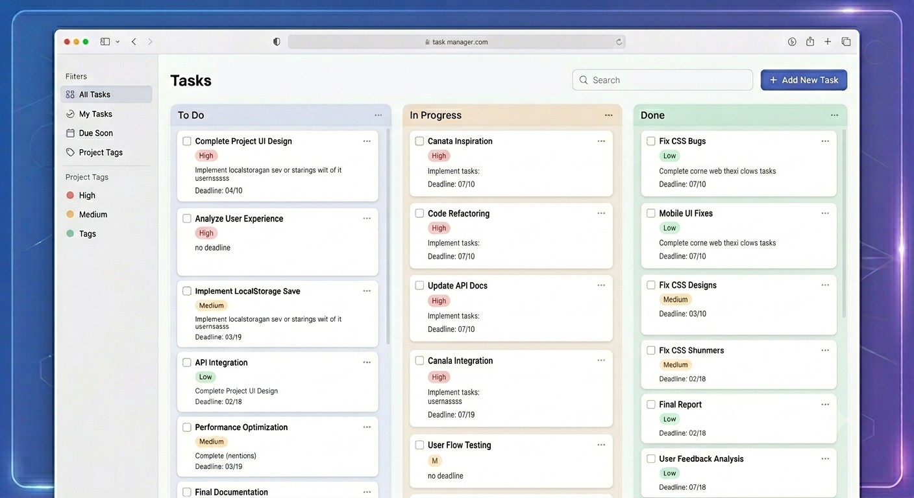
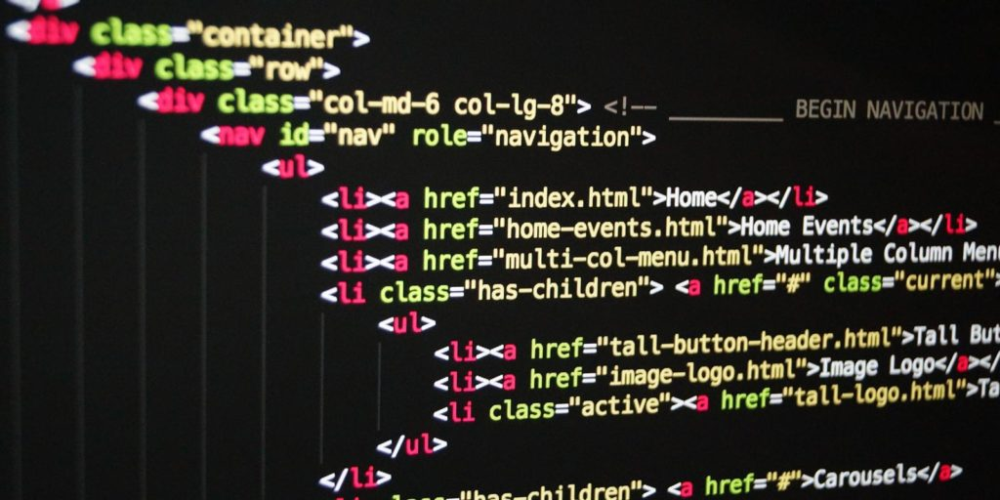
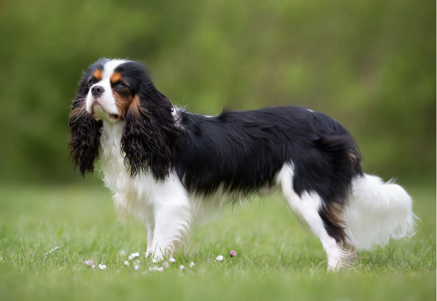
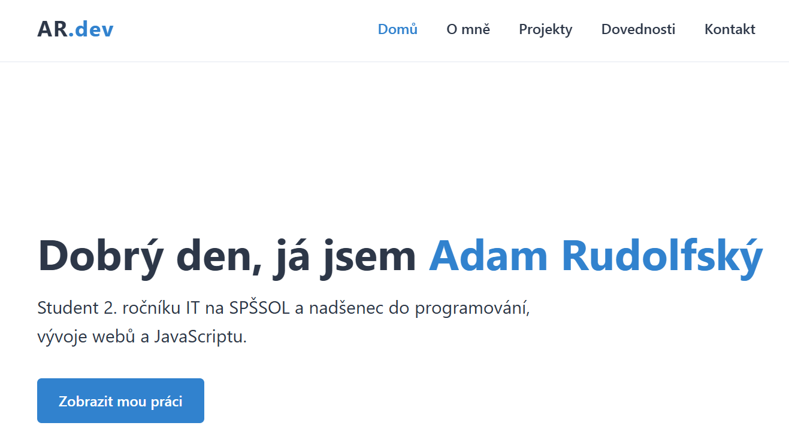

Interactive Task Manager
Kompletní webová aplikace pro správu úkolů napsaná v JavaScriptu s využitím LocalStorage pro ukládání dat.
JavaScript HTML5/CSS3Student 2. ročníku IT na SPŠSOL a nadšenec do programování, vývoje webů a JavaScriptu.
Zobrazit mou práci
Aktuálně studuji druhý ročník (brzy již třetí) na SPŠSOL, obor IT, kde se nejvíce zaměřuji na softwarový vývoj. Mým největším parťákem při kódování je JavaScript, baví mě v něm tvořit interaktivní webové stránky a neustále objevovat nové frameworky.
Když zrovna nesedím u počítače a nepíšu kód, trávím čas venku. Mým velkým koníčkem a skvělým parťákem na čištění hlavy od programování je totiž můj pes, se kterým podnikám dlouhé procházky.


Kompletní webová aplikace pro správu úkolů napsaná v JavaScriptu s využitím LocalStorage pro ukládání dat.
JavaScript HTML5/CSS3
Responzivní webové portfolio splňující moderní webové standardy s čistým designem, SEO optimalizací a implementovaným Dark Mode režimem. Web je napsaný srozumitelně a s využitím sémantických značek.
HTML5 CSS Grid JavaScript